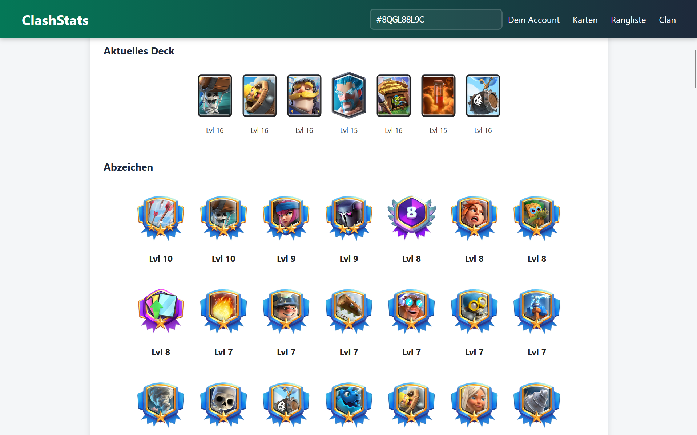

Joshua
Merki
Informatiker
IMS-Schüler an der Alten Kanti Aarau im 2. Jahr. Auf der Suche nach einem Praktikum zum Abschluss meiner Ausbildung.
Portfolio
Informatiker
IMS-Schüler an der Alten Kanti Aarau im 2. Jahr. Auf der Suche nach einem Praktikum zum Abschluss meiner Ausbildung.
Über mich
Hallo, ich bin Joshua Merki, ein leidenschaftlicher Informatiker mit über einem Jahr Erfahrung in der Softwareentwicklung. In meinem Portfolio präsentiere ich eine Auswahl meiner Projekte, die meine Fähigkeiten und mein Engagement für innovative Lösungen demonstrieren.
Projekte

Projekt 1
Ein mit Godot entwickeltes Jump-’n’-Run-Spiel mit Datenbankanbindung zur Speicherung der Spielergebnisse.

Eine Anwendung zur Anzeige von Clash Royale Spielerstatistiken mithilfe der offiziellen API.

Ein RPG-Spiel, das in der Konsole entwickelt wurde.
Kontakt